リバースエイジング サプリメント
再生医療の研究所が開発した、
アンチエイジングの、その一歩先へ。再生医療の研究所が、ウロリチン・スペルミジンなど
30種以上の成分を1包に込めたインナーケア サプリメント「クロノ・アール カプセル」。
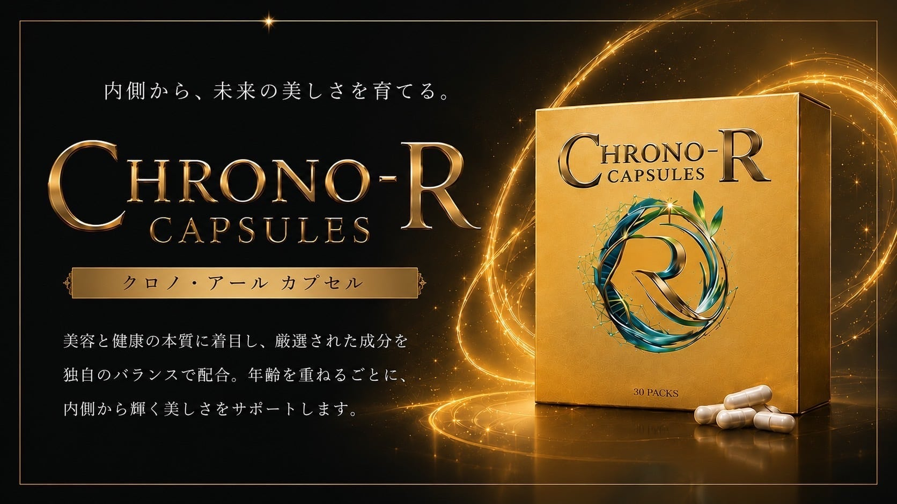
AWARD 2024
WSJアワード
受賞
DEVELOPER
再生医療研究所が
開発
INGREDIENTS
30種以上の
成分
再生医療研究の知見に着目した、
インナーケア サプリメント
Regenerate Your Time
あなたの時間を、再び動かすために
未来の再生科学を、日常へ。
クロノ・アールという名前は、ギリシャ語で時間を意味するクロノス（Chronos）と、開発元RIEIRの頭文字（R）から生まれました。
年齢を重ねることは、衰えていくことだけではない。開発元のリエール再生医療研究所はそう考え、再生医療の研究を美容と健康の分野に生かしてきました。目指すのは、人生100年時代を健やかに、自分らしく過ごせる毎日です。
毎日のインナーケアに。そして、年齢とともに変わる女性の体を支えるフェムケアにも。1日1包を、日々の習慣に。
リバースエイジングとは？
アンチエイジングとの違い
アンチエイジングは、年齢による変化をゆるやかにして、今の状態を保とうとする「守りのケア」。それに対してリバースエイジングは、一般的に「若返り」を意味する言葉として、美容や健康の分野で使われています。リエール再生医療研究所では、これを「若作り」ではなく、年齢を重ねた今の体に内側から向き合い、これからの毎日を健やかに過ごすための「前向きなケア」と捉えています。
近年は、老化のしくみを細胞の単位から解き明かそうとする研究が世界中で進み、その知見が美容や健康の分野にも広がりはじめました。クロノ・アール カプセルは、こうした研究の流れに着目して開発されたリバースエイジング サプリメントです。
アンチエイジング
守りのケア年齢による変化をゆるやかにすることを目指す考え方。今の状態をできるだけ保つ、守りのケアです。
リバースエイジング
前向きなケア年齢を重ねた今の体に、内側から向き合う考え方。これからの毎日を健やかに過ごすための、前向きなケアです。
※イメージ図です。効果・効能を示すものではありません。
ほかのサプリメントと、何が違う？
3つの選ばれる理由
30種以上の成分を、1日1包に
ウロリチン、スペルミジン、フィセチン、NAD原料成分。話題のエイジングケア成分を個別にそろえようとすると、何種類ものサプリメントを買い、飲み分ける必要があります。クロノ・アールなら、毎日1包でまとめて取り入れられます。
独自の「黄金比バランス」設計
成分配合と設計思想にこだわった、独自の黄金比バランス。30種以上の成分を1包にまとめるにあたり、複数の有用成分が互いに補い合うよう、ナノテクノロジーを応用した超微細なレベルで設計しています。
再生医療の研究所が開発
開発したのは、リエール再生医療研究所。人生100年時代を健やかに過ごすことを目指して、商品開発を続けています。2024年5月には、ニューヨークで開かれたウォール・ストリート・ジャーナル主催のアワードで、Next Era Beauty部門を受賞しました。
| 比較 項目 | 一般的な | クロノ・アール カプセル |
|---|---|---|
| 成分数 | 1〜数種類 | 30種以上 |
| 注目 | 何種類も購入・飲み分け | 1日1包で完結 |
| 設計 | 一般的な製法 | 独自の黄金比バランス設計 |
| 開発 | ― | 再生医療の研究所 |
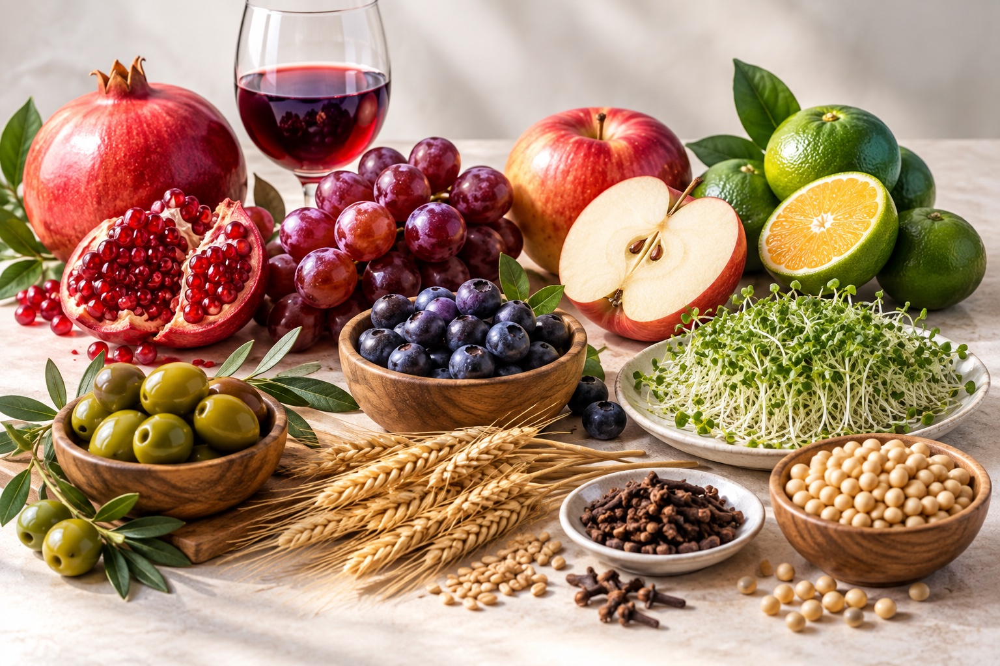
ウロリチン・スペルミジン・
フィセチン配合。話題の成分を
まとめて摂れるサプリメント
セノリティクス研究で注目される成分をはじめ、30種以上の素材を配合。エイジングケアの分野で研究が進み、単体のサプリメントとしても販売されている成分を、クロノ・アール カプセルなら1日1包（4カプセル）でまとめて取り入れられます。
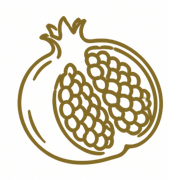
ウロリチン
ザクロ抽出発酵物
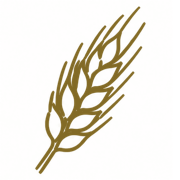
スペルミジン
小麦胚芽エキス末
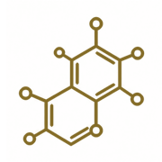
フィセチン
フラボノイドの一種
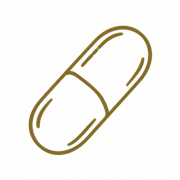
NAD原料成分
ナイアシンアミド
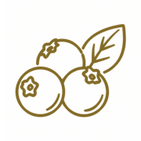
アントシアニン
ビルベリーエキス末
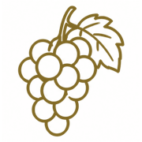
レスベラトロール
赤ワインエキス
ほか、全30種以上
再生医療の研究所が
開発したサプリメント
ニューヨークで Next Era Beauty部門を受賞
クロノ・アール カプセルを開発したのは、リエール再生医療研究所です。再生医療の技術を美容と健康の分野に生かし、人生100年時代を健やかに過ごすための商品開発を続けています。2024年5月には、ウォール・ストリート・ジャーナル（WSJ）主催の式典「The Future of Everything」で開かれた、世界が選ぶ次世代のリーダーを表彰する Next Era Leaders Award のセレモニーで、Next Era Beauty部門を受賞しました。
NEXT ERA LEADERS AWARD — 2024
クロノ・アール カプセルを
続けている方の声
何種類もそろえなくていいのが、助かっています。
成分ごとに別々のサプリメントを買っていたので、1包にまとまっているのが決め手でした。個包装なので、朝のスムージーと一緒に続けています。
40代女性
出張にも、1包ずつ持っていけて、とても便利です。
成分表を見て選びました。1日分が1包に分かれているので、数える手間がありません。かばんに入れておけるので、助かっています。
50代男性
クロノ・アール カプセルの価格
話題の成分を一つずつそろえる手間を、1包に。30種以上の成分を配合した、約30日分のリバースエイジング サプリメントです。
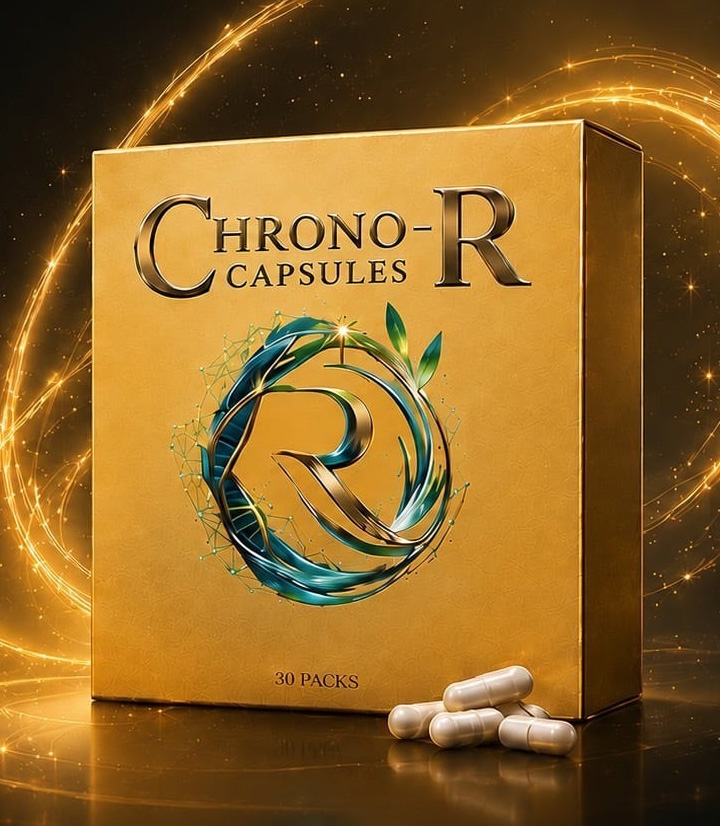
CHRONO-R CAPSULES
クロノ・アール カプセル
¥159,500（税込）
- 内容量
- 0.4g × 4カプセル × 30包（約30日分）
- 目安
- 1日1包（4カプセル）
- 送料：全国一律 無料
- お支払い：クレジットカード・銀行振込
- 1回ごとのご購入です（定期購入ではありません）
よくある質問
Q.いつ飲むのがいいですか？
A.決まったタイミングはありません。毎日続けやすい時間にお召し上がりください。
Q.薬と一緒に飲んでも大丈夫ですか？
A.薬を服用中の方、通院中の方は、お召し上がりの前に医師にご相談ください。
Q.どのくらい続ければいいですか？
A.健康食品のため、感じ方には個人差があります。まずは毎日の習慣として、続けていただくことをおすすめしています。
アンチエイジングの、その一歩先へ。
年齢を重ねることを、あきらめではなく、これからを楽しむきっかけに。
リエール再生医療研究所が開発したリバースエイジング サプリメント「クロノ・アール カプセル」で、内側からのインナーケアを始めませんか。